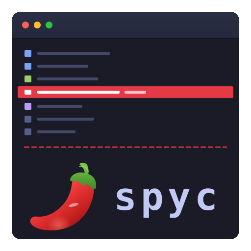
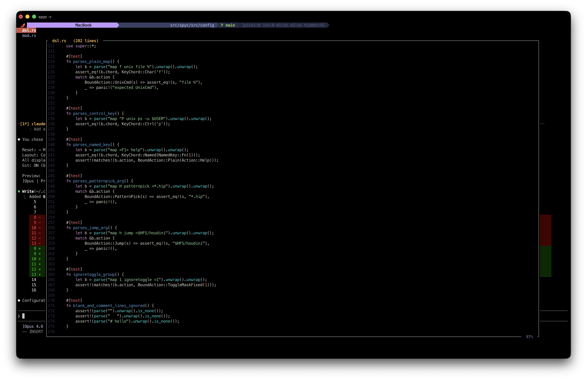

Tripstack Tech Demo
A Rust TUI file commander where the AI agent
in the side pane can query the file commander itself.
The file commander is the noun the agent operates on, not the chrome around it.
A two-pane terminal program inspired by SideFX's spy: vim-flavoured file commander on top,
a child process below (Claude Code, codex, gemini — all first-class). They share focus and the file
commander exposes a local MCP socket the agent connects to.
gf jumps from agent output to the file listThis is what makes spyc more than "a terminal inside a terminal."
.mcp.json (Claude) / .codex/config.toml (codex) / settings.json (gemini) — no flags neededspyc --mcp as a stdio proxy that forwards to the same socketClaude can mutate the TUI via MCP tools — command channel from server thread to event loop:
navigate_to set_filter pick_files clear_picks get_file_content
"Filter to Rust files and pick the tests" → Claude calls set_filter + pick_files → TUI updates live.
We searched. Here's what's out there:
Rust TUI file managers with vim keybindings. Fast, popular (Yazi has 33k+ stars).
No AI integration. No embedded pty. No MCP.
Rust + Tauri GUI file manager. Has Claude Code terminal, split panes, code editor.
GUI app, not terminal-native. Electron-class weight.
Wave: terminal with built-in AI. TmuxAI: AI overlay that reads tmux panes.
Terminals with AI bolted on. Not file managers. No structured context.
spyc occupies an empty niche: terminal-native file manager
with embedded AI pty, MCP context bridge, and session continuity.
Built with ratatui + crossterm + vt100 + portable-pty. Static Linux binaries via musl. macOS universal binary. Hand-rolled MCP server (no async runtime).
Clean module boundaries. One event loop. Action-driven dispatch.
Every user action maps to an Action enum variant. New features = new variant + keymap binding + handler.
Single Action enum is the full vocabulary of user behaviour. Keymap DSL binds any key to any action. One match arm per feature.
Event-driven: 0 dps at idle. DEC 2026 synchronized output wraps every frame. build_rows() + grid cached via generation counter. ~2.5% idle CPU (vim-competitive).
Each tab is an independent pty. vt100 parser processes output. Bracketed paste forwarding. 10K-line scrollback per tab.
Read: atomic JSON snapshot, throttled 1/sec. Write: command channel (mpsc) from MCP socket threads to event loop with one-shot reply channels. 5s timeout.
Line editor has insert/normal modes, operator+motion (dw, cw), word objects. Same muscle memory from prompt to pager to file list.
Yanked files copied to ~/.local/state/spyc/inventory/ with UUID metadata. Graveyard for safe deletes. Persists across sessions.
m{a-z} / '{a-z}=*.rs)gf / gF — jump from pane output to file list^a P sends file contents to pane[b / ]b navigate closed pagersv opens in $EDITOR, returns to pagerg d / g D diff view in pagerTarget: public distribution, mid-to-late May 2026
~95% complete
--print-configMulti-agent + writable MCP shipped
README done, infra remaining
Time to see it in action

Demo flow:
set_filter → TUI updatesgf — jump from Claude output to file list^a Pspyc -r → conversation resumes
bitbucket.org/tripstack/spyc